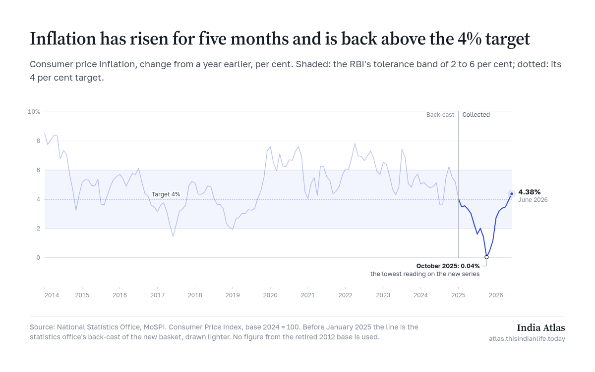
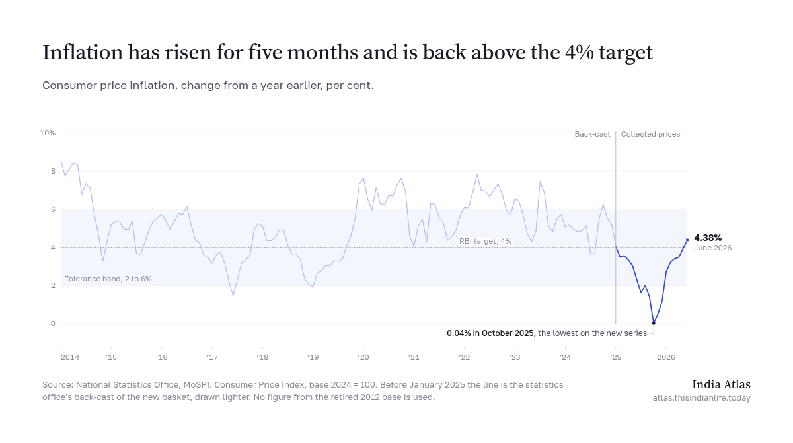
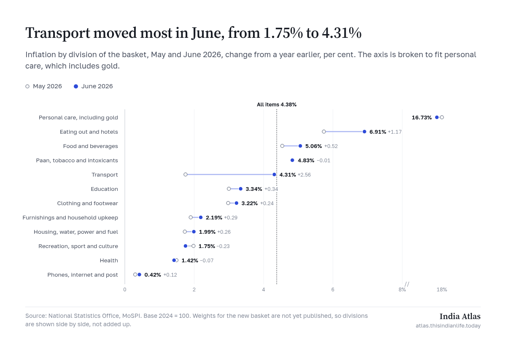
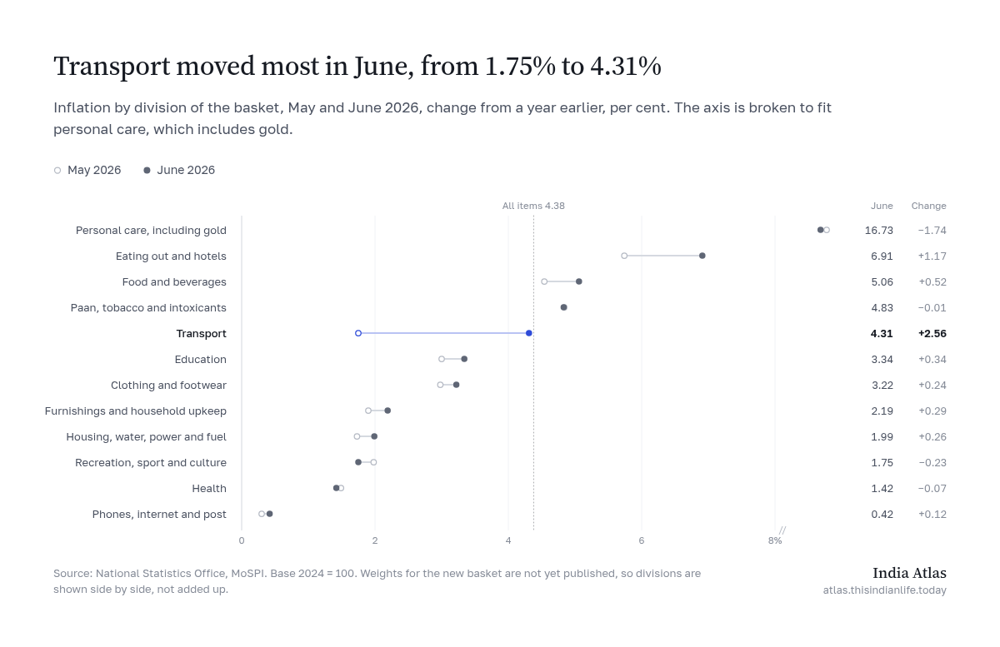
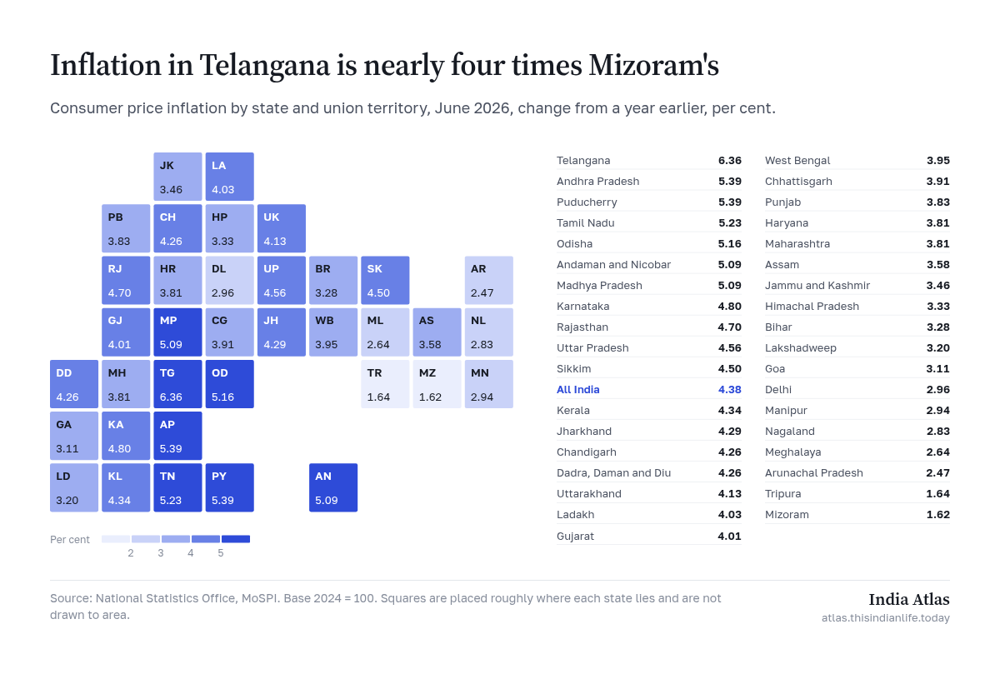
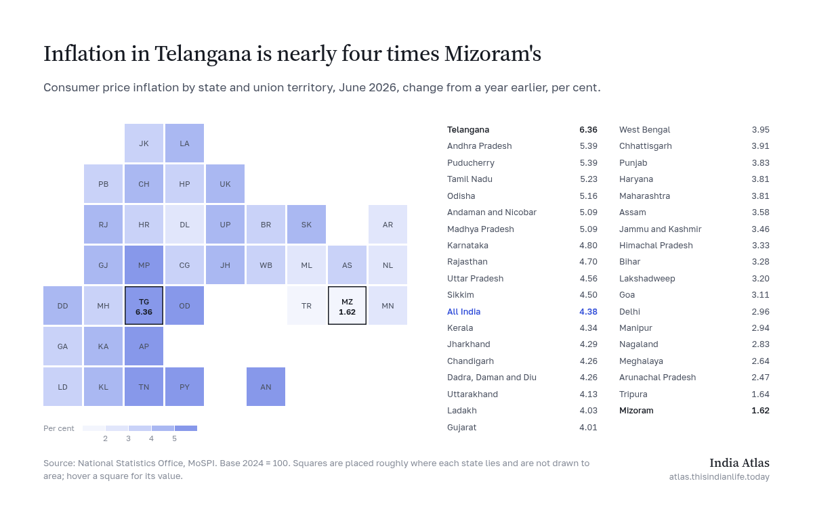

The same data and titles, drawn by the first kit and the current one (v3). Both images are the share files a reader would download.
Thinner lines and a pale solid back-cast. The band and the target are labelled inside the chart, so the subtitle only states the measure. Years read 2014, ’15 … 2026 with small ticks. The annotation is one line with a hairline leader, and the end value is the only bold text.


Only transport, the row the title is about, carries colour and a bold value; the rest are grey. Values move into two aligned columns, June and change, so twenty-four floating labels become one quiet table. The connectors are thinner and the dots smaller.


A much paler scale with square corners. Tiles carry only state codes; values live in the ranked list, except for Telangana and Mizoram, the two the title compares, which are outlined and carry their numbers. The list drops from 37 bold numbers to two.


Earlier kits are kept as kit-v1.js and kit-v2.js. Every chart on the guide page uses kit v3.